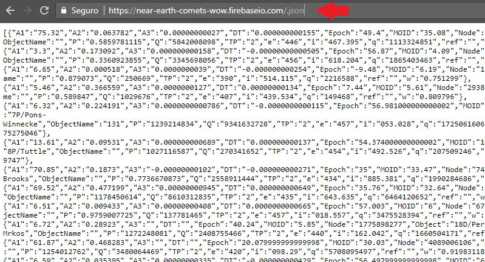

Finally, we have our API.
You can use any Firebase Database URL as a REST endpoint. All you need to do is append .json to the end of the URL.
Try to access this URL bellow. See the whole comet database.
Remember to replace [PROJECT_ID] with the identifier of your Firebase project.
https://[PROJECT_ID].firebaseio.com/data.json
In my case is:
https://near-earth-comets.firebaseio.com/data.json
If we want only one record, the link is like this:
https://[PROJECT_ID].firebaseio.com/data/0.json
0 (zero) is the record ID.
We can work with Firebase API completely by using a programming language.
This lesson will use Javascript.
First of all, we need to get the API KEY on your project page.
Access this URL:
https://console.developers.google.com/apis/credentials?project=PROJECT_ID&pli=1
Take the key like the image.
Download this 'comets.html' html file that will connect to the Firebase API and show data on a html table.
Replace the API_KEY and PROJECT_ID on the file to your code.
Other lines execute the connection and create html element for each comet found.
Edit and save your file, after replacing your keys.
It's ok. Open your html file on browser and see the result.
This lesson teaches us to make a new API from a static JSON file.
It's possible having a Firebase project from a CSV or PDF file, for example, but this task is a little bit hard because of the JSON conversion process.
If you need more information or help, see the resources or contact me.